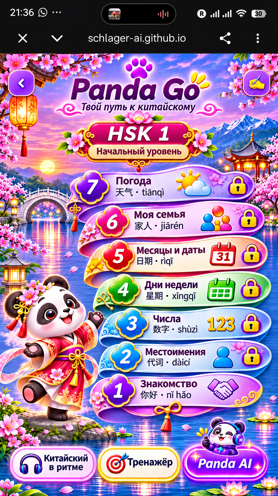

‹
✍
Panda Go
HSK 1 · Начальный уровень
Твой путь к китайскому
0 из 7 уроков
7
Погода
天气 · tiānqì
›
6
Моя семья
家人 · jiārén
›
5
Месяцы и даты
日期 · rìqī
›
4
Дни недели
星期 · xīngqī
›
3
Числа
数字 · shùzì
›
2
Местоимения
代词 · dàicí
›
1
Знакомство
你好 · nǐ hǎo
16 экранов · знакомство
›
🎧
Китайский в ритме
🎯
Тренажёр
Panda AI
Итоговая проверка — 21 задание
·
Источники аудио